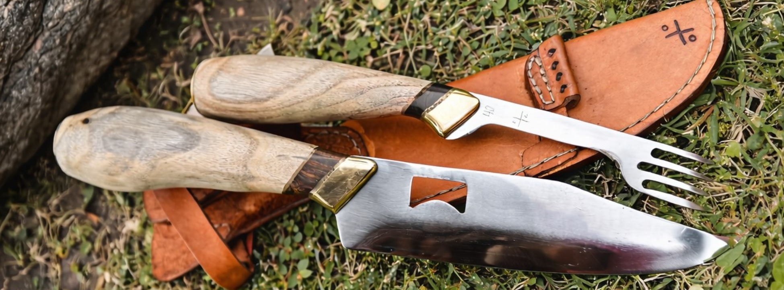

En manos de Toto, cada cuchillo se elabora en nuestro taller con los mejores materiales, forjados con pasión, precisión y respeto por la historia.

En Cuchillería Toto no solo fabricamos cuchillos, forjamos el vínculo entre el asador, el campo y la tradición. Cada hoja es sometida a un riguroso proceso de templado y revenido, asegurando un filo quirúrgico y una resistencia inquebrantable.
Acero inoxidable
Retención de filo superior y fácil afilado.
Maderas nobles
Seleccionadas por dureza y veta natural, para cada empuñadura